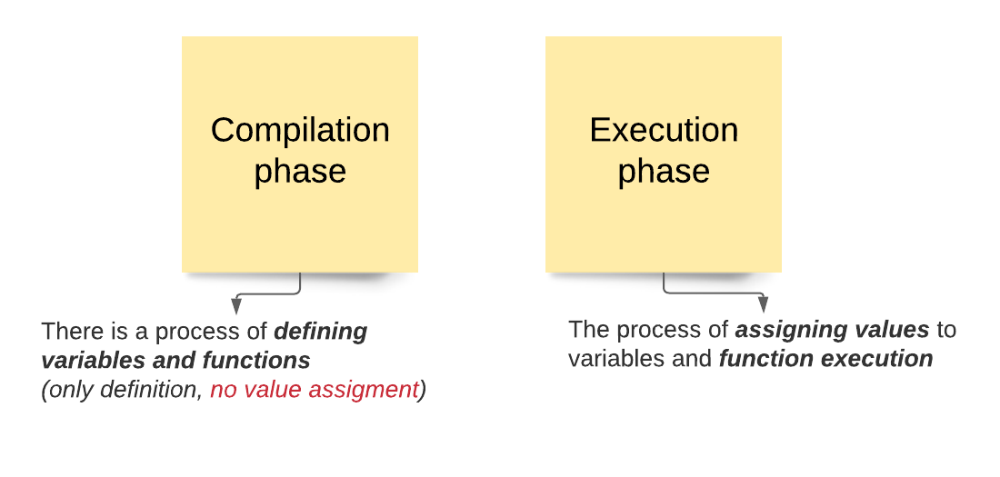
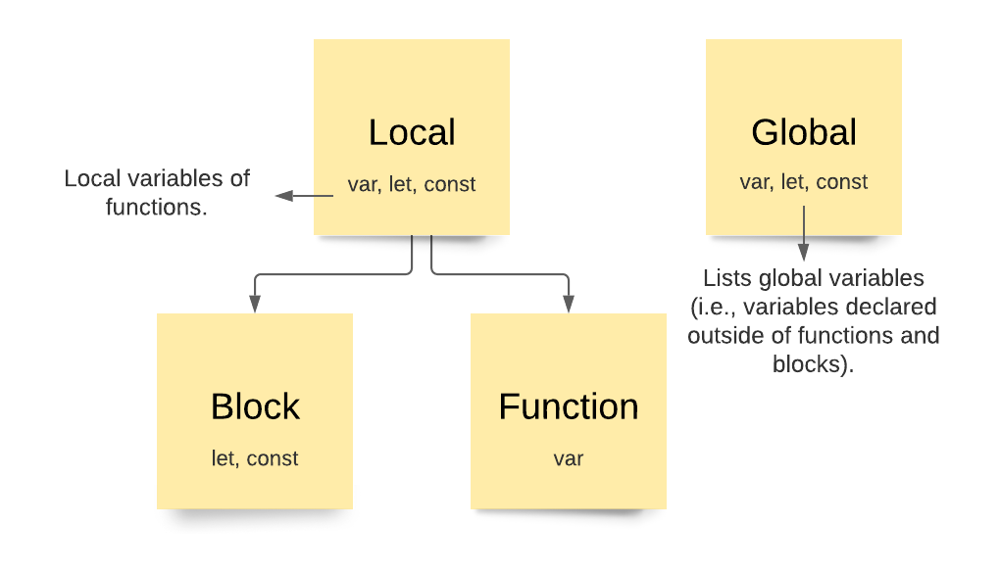

My name is Marina and I’m a Front-End Developer.
In this course "Js in brief" I want to show you what any front-end developer needs to know.
All of the topics presented in this course are just a list with brief explanations.
Undoubtedly, to become a pro you need to study much deeper, and the links to books
and topics at the end of each presentation will help you with that.
JavaScript is very interesting!
Good luck with your studies!
P.S. the presentation will be updated as I have free time.
In the process of preparing this material, I will get better with you :)
I’m a Front-End Software Developer and software engineer with 8 years of experience with large scale application development for E-Commerce, Pharmaceutical, and Banking industries.
I specialize in developing user interfaces using technologies such as Angular, React, Javascript, Typescript, Html and Сss preprocessors. I also have some experience as a backend developer.
Briefly about what every web front end developer should know.
To learn how to write and understand Js code, what is Scope, Hoisting, etc., you need to pay attention to how Js code is executed.
2 phases of JS code processing:
#1 Simple Example:
An example to understand what Scope is and how Js works
#2 Simple Example:
JavaScript code is processed by the engine of this language in 2 phases:
In the programming language defines the visibility and lifetime of variables, parameters and functions.
This is an important concept to avoid name collisions and to enable automatic memory management.
The concept of Variable Scope in Js can be divided into the following main groups:
P.S. If you declare a local variable or function with the same name as a global variable, you effectively hide the global variable:
// Declare a global variable.
var scope = "global";
function checkScope() {
// Declare a local variable with the same name.
var scope = "local/function";
return scope;
}
checkScope() // => "local/function"
Example of global, block, function scope
// Global scope.
var a = 1;
let b = 2;
const c = 3;
if(true) {
// Local/Block scope - defined by the first curly braces.
var a = 3;
let b = 4;
const c = 5;
console.log('Block scope: ', a,b,c) // => 3 4 5
}
function checkScope() {
// Local/Function scope - defined by the
// first function curly braces.
var a = 6;
let b = 7;
const c = 8;
console.log('Function scope: ', a,b,c) // => 6 7 8
}
checkScope() // => 6 7 8
console.log('Global scope: ', a,b,c) // => 3 2 3
If we run all the code written on the previous slide, then we get:
Block scope: 3 4 5
Function scope: 6 7 8
Global scope: 3 2 3
Why did console.log('Global scope:', a, b, c) return "3 2 3" for us?
Ie why the value of "var a" was changed but not let and const?
On the 9th line we see that "var a" is in the block scope, but we know that var always has a function scope and in this regard:
Nested Scope
Below is an example of a closure, which we'll talk about a little later. Now we are interested in understanding what the nested scope is.
So, in this example when we put a function inside another function, then we create nested scope.
In other words — the child function has access to the parent variables.